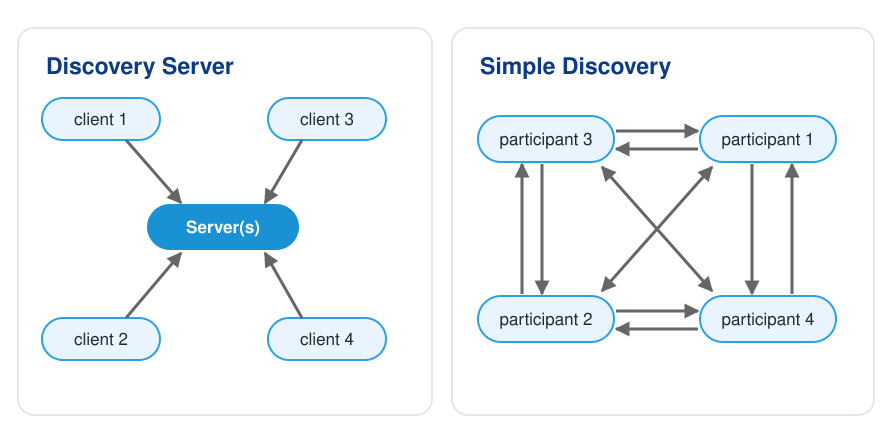
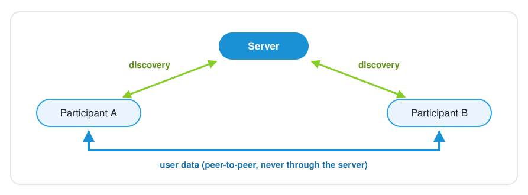

5.3.4. Discovery Server¶
This mechanism is based on a client-server discovery paradigm, i.e. the metatraffic (message exchange among DomainParticipants to identify each other) is managed by one or several server DomainParticipants (left figure), as opposed to simple discovery (right figure), where metatraffic is exchanged using a message broadcast mechanism like an IP multicast protocol.


Comparison of Discovery Server and Simple discovery mechanisms¶
5.3.4.1. Discovery Server and Discovery Server Pro¶
The client-server mechanism described in this page is available in the open-source version of Fast DDS. Fast DDS Pro uses the same architecture and adds a filtering stage in the server, together with further traffic and scalability optimizations, which cut down the discovery traffic that each client receives and the time it takes to discover large deployments. The following table summarizes the differences:
Discovery Server |
Discovery Server Pro |
|
|---|---|---|
Client-server discovery, without multicast |
Yes |
Yes |
Deployment topologies (single, redundant, backup, partitioned, TCP/WAN) |
Yes |
Yes |
Discovery information delivered to a |
All the information known by the server |
Only the information the client needs to match its own endpoints |
Topic-based filtering (“matching” algorithm) |
Not available |
The server uses the topics of each client to decide which discovery data it must forward, and leaves unmatched the DomainParticipants that do not share a topic |
Discovery traffic received by each client |
Grows with the total number of endpoints in the network |
Grows with the endpoints that the client actually matches |
Discovery traffic optimizations |
Baseline discovery data exchange |
Additional optimizations of the discovery data exchange by the server |
Scalability of the internal matching routines |
Baseline implementation |
The server matching routines are optimized to keep the discovery time and the server CPU load low as the number of endpoints grows |
Not available |
Batches the accumulated discovery changes |
|
Difference between a |
None in practice, as every client already receives everything the server knows |
A |
Not available |
Yes |
The rest of this page describes the behavior that is common to both versions. The sections and items that are exclusive to Fast DDS Pro are marked with the Pro badge.
5.3.4.2. Why use a Discovery Server¶
It does not depend on multicast. Each client only needs to reach the address of its server, which makes the mechanism suitable for networks where multicast is unreliable or disabled, such as WiFi, cloud deployments, or container networks.
It relies on a central known point for discovery. With Simple Discovery every DomainParticipant announces itself to, and waits for a response from, every other DomainParticipant, so the metatraffic is spread over every link of the network. With a Discovery Server, each DomainParticipant exchanges discovery information only with its server. This is convenient in distributed deployments running over unstable or bandwidth-limited links, such as WiFi networks, where the repeated announcements to every peer are expensive and prone to loss. Centralizing discovery does not mean introducing a single point of failure: several servers can be deployed and clients can connect to all of them at the same time, so discovery keeps working if one of them goes down (see Redundancy example).
It works over WAN and TCP. As the server is reached through explicit locators, the discovery phase can be routed over TCP or across networks (see TCP Communication with Discovery Server).
It gives control over who discovers whom. Only the DomainParticipants connected to the same server network discover each other, which can be used to isolate parts of the system (see UDPv4 partitioning using servers).
5.3.4.3. Does the user data go through the server?¶
No. The server only mediates the discovery phase. Once two endpoints have discovered each other, they exchange user data directly between them, exactly as they would with any other discovery mechanism.


The server participates in the discovery phase only; user data always flows peer-to-peer¶
Therefore the server is not a data broker: it does not add latency to the user data, and if it becomes unavailable, the DomainParticipants that already discovered each other keep communicating. Only new discovery is affected, which can be mitigated with redundant or backup servers.
5.3.4.4. Quick start¶
The fastest way to try the mechanism out is the fastdds discovery command of the Fast DDS CLI, which ships with Fast DDS and launches a server without writing any code:
fastdds discovery -l 127.0.0.1 -p 11811
Then run the applications that must discover each other, setting the
ROS_DISCOVERY_SERVER environment variable to the server locator.
Any DomainParticipant created with the default SIMPLE discovery protocol is automatically turned into a CLIENT of
that server:
export ROS_DISCOVERY_SERVER=127.0.0.1:11811
That is all that is needed for a local setup. The rest of this page explains how to configure the same behavior permanently, either programmatically or through XML profiles, and how to tune it.
Note
DDS Domain concept does not apply when enabling the default Discovery Server mechanism, but it applies when using ROS2_EASY_MODE.
5.3.4.5. Choosing a deployment¶
The Discovery Server supports several topologies. The following table summarizes the most common ones and where to find a complete configuration example of each:
Deployment |
When to use it |
Where to look |
|---|---|---|
Single server |
Default choice. One server handles the discovery of every DomainParticipant in the network. |
|
Redundant servers |
The system cannot afford to stop discovering new entities if a server goes down. Clients connect to several servers at the same time. |
|
Backup server |
The server must recover the network graph after an unexpected shutdown, without waiting for the clients to announce themselves again. |
|
Partitioned network |
Only certain groups of DomainParticipants should discover each other. |
|
TCP / WAN |
Discovery must cross network boundaries, or the deployment cannot use UDP. |
|
ROS 2 |
The nodes are ROS 2 nodes, either configured manually or through |
5.3.4.6. Key concepts¶
In this architecture there are several key concepts to understand:
The Discovery Server mechanism reuses the RTPS discovery messages structure, as well as the standard DDS DataWriters and DataReaders.
Discovery Server DomainParticipants may be clients or servers. The only difference between them is how they handle discovery traffic. The user traffic, that is, the traffic among the DataWriters and DataReaders they create, is role-independent.
A
SERVERis a participant to which the clients (and maybe other servers) send their discovery information.The role of the server is to redistribute its clients discovery information to its known clients and servers.
A server also announces the existence of a new server to its known servers, and vice versa. In this way, a new server can connect to every other existing server in the network by just knowing the existence of one of them. In this way, a mesh topology between servers is created with minimal configuration.
The discovery information that is redistributed might come from a direct client connected to the
SERVER, or from another server that is redirecting the discovery data from its clients.Pro Known servers will receive the participant information (
Data(P)) of other servers to create the mesh, and the participant + endpoint information (Data(r/w)) of the direct clients known by the server that matches the topics they are interested in. Servers do not receive information about clients they are not interested in. Each server announces to its known servers the set of topics used by the participants it serves directly, so that only the discovery information that can lead to a match is exchanged between servers.Note
This behavior, known as topic interest propagation, is only present in Fast DDS Pro v3.8.0 or newer, where it is the default. Please refer to Topic interest propagation for further details, and for the behavior of previous versions.
Pro Known clients will only receive the information they need to establish communication, i.e. the information about the DomainParticipants, DataWriters, and DataReaders to which they match. This means that the server runs a “matching” algorithm to sort out which information is required by which client. This optimized behavior is exclusive to Fast DDS Pro: the open-source version does not implement the “matching” algorithm, so clients receive all the discovery information known by the server.
A
BACKUPserver is a server that persists its discovery database into a file.This type of server can load the network graph from a file on start-up without the need of receiving any client’s information.
It can be used to persist the server knowledge about the network between runs, thus securing the server’s information in case of unexpected shutdowns.
It is important to note that the discovery times will be negatively affected when using this type of server, since periodically writing to a file is an expensive operation.
A
CLIENTis a participant that connects to one or more servers from which it receives the discovery information it needs to establish communication with matching endpoints.Pro Clients receive only the discovery information they require to establish communication with matching endpoints. Since the open-source version does not implement the server “matching” algorithm, every client receives all the discovery information known by the server, thus behaving as a
SUPER_CLIENT.Clients require prior knowledge of the servers to which they want to link. Basically, it consists of a list of locators where the servers are listening, namely, an IP address and a port. These locators also define the transport protocol (UDP or TCP) the client will use to contact the server.
A
SUPER_CLIENTis a client that receives all the discovery information known by the server, in opposition to clients, which only receive the information they need. This distinction only applies to Fast DDS Pro, the version implementing the server “matching” algorithm. In the open-source version every client already receives all the discovery information known by the server, and therefore behaves as aSUPER_CLIENT.Note
A
SUPER_CLIENTdoes not behave as a Server as it only receives the discovery information through the Server to which it is connected. It will not connect to other servers, and it will not redistribute the information it receives. Any DomainParticipant discovered by the Server with no endpoints will not be known by theSUPER_CLIENT.Note
A server with a directly connected
SUPER_CLIENTrequests the whole discovery information from its known servers, since aSUPER_CLIENTis entitled to the complete network graph. Please refer to Topic interest propagation for further details. This applies to Fast DDS Pro v3.8.0 or newer.Servers do not require any prior knowledge of their clients, but they must listen in the address specified by the locator provided to the clients. Clients send discovery messages to the servers at regular intervals (ping period) until they receive message reception acknowledgement. From then on, the server knows about the client and will inform it of the relevant discovery information. The same principle applies to a server connecting to another server.
5.3.4.7. Choosing between Client and Server¶
It is set by the Discovery Protocol general setting.
A participant can only play one role (despite the fact that a server may connect to other servers).
It is mandatory to fill this value because it defaults to SIMPLE.
The examples below shows how to set this parameter both programmatically and using XML.
DomainParticipantQos pqos;
pqos.wire_protocol().builtin.discovery_config.discoveryProtocol =
DiscoveryProtocol::CLIENT;
pqos.wire_protocol().builtin.discovery_config.discoveryProtocol =
DiscoveryProtocol::SUPER_CLIENT;
pqos.wire_protocol().builtin.discovery_config.discoveryProtocol =
DiscoveryProtocol::SERVER;
pqos.wire_protocol().builtin.discovery_config.discoveryProtocol =
DiscoveryProtocol::BACKUP;
<?xml version="1.0" encoding="UTF-8" ?>
<profiles xmlns="http://www.eprosima.com">
<participant profile_name="participant_discovery_protocol_alt" >
<rtps>
<builtin>
<discovery_config>
<discoveryProtocol>CLIENT</discoveryProtocol>
<!-- alternatives
<discoveryProtocol>SERVER</discoveryProtocol>
<discoveryProtocol>SUPER_CLIENT</discoveryProtocol>
<discoveryProtocol>BACKUP</discoveryProtocol>
-->
</discovery_config>
</builtin>
</rtps>
</participant>
</profiles>
5.3.4.8. The server locator list¶
Each server must specify valid locators where it can be reached. Any client must be given proper locators to reach each of its servers. Below are two examples of a server and a client side setup.
5.3.4.8.1. Server side setup¶
The examples below show how to setup the server locator list and XML tag. Each locator must contain:
IP address.
Port.
Transport protocol (UDPv4/6 or TCPv4/6).
Locator_t locator;
// The default locator kind is UDPv4
locator.kind = LOCATOR_KIND_UDPv4;
IPLocator::setIPv4(locator, 192, 168, 1, 133);
locator.port = 64863;
DomainParticipantQos serverQos;
serverQos.wire_protocol().builtin.metatrafficUnicastLocatorList.push_back(locator);
<?xml version="1.0" encoding="UTF-8" ?>
<profiles xmlns="http://www.eprosima.com">
<participant profile_name="participant_profile_discovery_server_server_metatraffic">
<rtps>
<builtin>
<metatrafficUnicastLocatorList>
<locator>
<udpv4>
<!-- placeholder server UDP address -->
<address>192.168.1.113</address>
<port>64863</port>
</udpv4>
</locator>
</metatrafficUnicastLocatorList>
</builtin>
</rtps>
</participant>
</profiles>
Note that a server can connect to other servers, thus, the following section may also apply.
5.3.4.8.2. Client side setup¶
Each client must keep a list of locators associated to the servers to which it wants to link.
Note that providing an unreachable locator will result in the client sending ping messages to that direction at regular intervals until it is connected to the same amount of servers that has been configured in the locator list.
Locator_t locator;
// The default locator kind is UDPv4
locator.kind = LOCATOR_KIND_UDPv4;
IPLocator::setIPv4(locator, 192, 168, 1, 133);
locator.port = 64863;
DomainParticipantQos clientQos;
clientQos.wire_protocol().builtin.discovery_config.m_DiscoveryServers.push_back(locator);
<?xml version="1.0" encoding="UTF-8" ?>
<profiles xmlns="http://www.eprosima.com">
<participant profile_name="participant_profile_discovery_server_client_metatraffic">
<rtps>
<builtin>
<discovery_config>
<discoveryServersList>
<locator>
<udpv4>
<!-- placeholder server UDP address -->
<address>192.168.1.113</address>
<port>64863</port>
</udpv4>
</locator>
</discoveryServersList>
</discovery_config>
</builtin>
</rtps>
</participant>
</profiles>
Note
Additionally, a logical port can be specified in the locator. If this parameters is left empty, Fast DDS will automatically assign a logical port equal to the physical port whenever it is needed. This behavior is coherent with the logic implemented in the ROS_DISCOVERY_SERVER environment variable and the Fast DDS CLI tool.
5.3.4.9. Fine tuning discovery server handshake¶
As explained above the clients send discovery messages to the servers at regular intervals (ping period) until they receive as many message reception acknowledgement as remote locators (server addresses) were specified. Mind that this period also applies for those servers which connect to other servers. The default value for this period is 450 ms, but it can be configured to a different value.
DomainParticipantQos participant_qos;
participant_qos.wire_protocol().builtin.discovery_config.discoveryServer_client_syncperiod =
Duration_t(0, 250000000);
<?xml version="1.0" encoding="UTF-8" ?>
<profiles xmlns="http://www.eprosima.com">
<participant profile_name="participant_profile_ping" >
<rtps>
<builtin>
<discovery_config>
<clientAnnouncementPeriod>
<!-- change default to 250 ms -->
<nanosec>250000000</nanosec>
</clientAnnouncementPeriod>
</discovery_config>
</builtin>
</rtps>
</participant>
</profiles>
5.3.4.10. Fine tuning the server send rate limiter Pro¶
The fastdds.discovery_server.send_period property controls the minimum interval (in
milliseconds) between consecutive flushes of accumulated discovery changes to the writer
histories. When set to a positive integer value (e.g. "1000" for one second), the server
still processes incoming data on every routine iteration (triggered by
<clientAnnouncementPeriod>), but defers the send step until at least that many milliseconds
have elapsed since the last flush. All changes that accumulate in that window are sent together
in one batch.
This is useful in large-scale scenarios where many participants join simultaneously: without rate limiting, the server sends partial discovery data before all endpoints of a participant have been received, requiring redundant retransmissions once the remaining data arrives. A longer send period lets changes accumulate so that sends contain more complete information, reducing overall traffic.
Tuning guidance:
Set
fastdds.discovery_server.send_periodto"300"-"5000"when hundreds of participants join simultaneously. This lets the server accumulate more complete discovery data before sending, avoiding redundant retransmissions of partial information.Leave unset (or set to
"0") for small-scale deployments.
DomainParticipantQos participant_qos;
participant_qos.properties().properties().emplace_back(
"fastdds.discovery_server.send_period", "1000");
<?xml version="1.0" encoding="UTF-8" ?>
<profiles xmlns="http://www.eprosima.com">
<participant profile_name="participant_profile_send_period" >
<rtps>
<propertiesPolicy>
<properties>
<property>
<name>fastdds.discovery_server.send_period</name>
<value>1000</value>
<!-- rate-limit sends to once per second (value in milliseconds) -->
</property>
</properties>
</propertiesPolicy>
</rtps>
</profiles>
5.3.4.11. Topic interest propagation Pro¶
Servers connected to each other exchange only the discovery information that their peers are able to match. Each server announces to its known servers the set of topics used by the participants it serves directly (its clients and its super clients), and receives from each of them only the DomainParticipants, DataWriters and DataReaders that belong to that set of topics.
Note
Topic interest propagation is only present in Fast DDS Pro v3.8.0 or newer, where it is the default behavior.
It is a server side mechanism: clients and super clients are unaffected, and the discovery
information they receive is not affected.
From this version on, SERVER and BACKUP participants are pure discovery entities, and they cannot create
user entities (Topics, Publishers, Subscribers, DataWriters, DataReaders or RPC services).
Therefore, the topics announced by a server are only those used by its clients and super clients.
5.3.4.11.1. Previous behavior¶
In Fast DDS, and in Fast DDS Pro v3.7.0 and older, a server forwards to every known server all the discovery information of its direct clients, regardless of whether the remote server has any endpoint able to match it. Consequently, every server of the network ends up holding a copy of the whole network graph, and both the discovery traffic exchanged between servers and the memory used by their discovery databases grow with the size of the whole deployment, even for servers that have no topic in common.
The “matching” algorithm that limits the information sent to each client was already in place, so this affected only the information exchanged between servers.
5.3.4.11.2. How topic interest propagation works¶
Each server announces to its known servers the topics used by the participants it serves directly, and keeps that announcement up to date as those participants create and delete endpoints. Information relayed by other servers does not count towards the interest of a server.
A server only sends to a peer the DomainParticipants and endpoints that the participants of that peer can match. For instance, the DataWriters of a topic are only sent to a peer whose participants read that topic.
A server with a directly connected
SUPER_CLIENTis interested in every topic, and therefore receives the whole discovery information from its peers.When the participants of a server stop using a topic, its peers stop sending new entities on that topic. The entities that were already sent remain known, and their updates and disposals are still delivered.
Note
As a result of this mechanism, the discovery database of a server holds a partial view of the network graph
instead of a copy of it.
This also applies to the database that a BACKUP server persists into a file.
If the whole network graph is required, a SUPER_CLIENT must be used.
5.3.4.11.3. Benefits of topic interest propagation¶
Less discovery traffic between servers. The information exchanged between two servers is proportional to the topics they have in common, instead of to the size of the whole deployment. Deployments where each server aggregates a group of clients working on a localized set of topics benefit the most.
Compartmentalization of the discovery traffic. Before this mechanism, splitting a deployment into several servers added little value in terms of discovery traffic, since every server ended up knowing, and forwarding, the same information. Now each server acts as a barrier for the discovery traffic of the group of participants it serves: only the topics shared with another group cross the boundary between them. Isolating groups of participants into different servers therefore reduces both the amount of discovery information sent over the network and the processing required on each server.
Lower memory footprint. A server only stores the remote entities that its own participants can match, so its discovery database no longer grows with the total number of entities in the network.
Better scalability. Adding a server, or a group of clients under a server, does not impact the servers that do not share any topic with them.
Less processing. Every server runs the “matching” algorithm over a smaller data set, which reduces the CPU time spent on discovery and shortens the discovery phase in large deployments.
5.3.4.11.4. Interoperability¶
The mechanism is negotiated on a per-connection basis, and it is used only between two servers that both announce support for it. This means that:
A server running Fast DDS Pro v3.8.0 or newer connected to a server running Fast DDS, an older version, or to a server that has the mechanism disabled, keeps the previous behavior on that connection, while still using topic interest propagation with the rest of its peers.
Clients and super clients are not involved in the negotiation, and they can run any version.
Important
Topic interest propagation is automatically disabled on a server that protects its discovery traffic (see Security ), since the list of topics used by a server is precisely the information that discovery protection is meant to hide. Such a server keeps the previous behavior.
5.3.4.11.5. Disabling topic interest propagation¶
The mechanism can be disabled on a SERVER or BACKUP participant by setting the
fastdds.discovery_server.topic_interest property to "false", which restores the
previous behavior on every connection of that server.
This may be required when every server of the deployment is expected to hold a complete copy of the network
graph, for instance when an external application connects to any server as a CLIENT and relies on
receiving the whole graph.
PropertyPolicyQos name |
PropertyPolicyQos value |
Default value |
|---|---|---|
|
|
|
DomainParticipantQos participant_qos;
// Disable topic interest propagation on this server
participant_qos.properties().properties().emplace_back(
"fastdds.discovery_server.topic_interest", "false");
<?xml version="1.0" encoding="UTF-8" ?>
<profiles xmlns="http://www.eprosima.com">
<participant profile_name="participant_profile_topic_interest" >
<rtps>
<propertiesPolicy>
<properties>
<property>
<name>fastdds.discovery_server.topic_interest</name>
<value>false</value>
<!-- disable topic interest propagation on this server -->
</property>
</properties>
</propertiesPolicy>
</rtps>
</participant>
</profiles>
5.3.4.12. Fine tuning the topic interest announcements Pro¶
The set of topics announced by a server (see Topic interest propagation ) usually changes in bursts: a participant joining or leaving creates or destroys several endpoints. To avoid sending one announcement per change, a server waits until the set of topics pending announcement stops growing before announcing it. Two properties control this coalescing window, both expressed as an integer number of milliseconds:
PropertyPolicyQos name |
Description |
PropertyPolicyQos value |
Default value |
|---|---|---|---|
|
How long the set of pending topics must remain unchanged before it is announced.
A value of |
Milliseconds, e.g. |
|
|
Upper bound on how long an announcement may be held back while the set of pending topics keeps growing. It caps the discovery latency that the coalescing may add. |
Milliseconds, e.g. |
|
Tuning guidance:
Increase both values when many participants join or leave simultaneously, and reducing the number of samples written on the interest announcement is more important than the time it takes to complete discovery.
Decrease both values, or set the gap to
"0", to prioritize discovery latency in small deployments where the topic set changes infrequently, at the cost of announcing the interest more often.
Note that the discovery information exchanged between servers is the same regardless of the coalescing settings. They only affect the number of samples used to announce the topic interest, how often those samples are written, and therefore how long it takes for a peer to learn about a new topic.
DomainParticipantQos participant_qos;
// Announce the pending topics once the set has been unchanged for 50 ms
participant_qos.properties().properties().emplace_back(
"fastdds.discovery_server.topic_interest_coalescing_gap", "50");
// Never hold back an announcement for more than 500 ms
participant_qos.properties().properties().emplace_back(
"fastdds.discovery_server.topic_interest_coalescing_max", "500");
<?xml version="1.0" encoding="UTF-8" ?>
<profiles xmlns="http://www.eprosima.com">
<participant profile_name="participant_profile_topic_interest_coalescing" >
<rtps>
<propertiesPolicy>
<properties>
<property>
<name>fastdds.discovery_server.topic_interest_coalescing_gap</name>
<value>50</value>
<!-- announce once the set of topics has been unchanged for 50 ms -->
</property>
<property>
<name>fastdds.discovery_server.topic_interest_coalescing_max</name>
<value>500</value>
<!-- never hold back an announcement for more than 500 ms -->
</property>
</properties>
</propertiesPolicy>
</rtps>
</participant>
</profiles>
Note
A value of "fastdds.discovery_server.topic_interest_coalescing_max" lower than the configured gap is
invalid, and the server uses the value of the gap instead.
An invalid or negative value of any of these properties results in the default value being used.
5.3.4.13. The GuidPrefix as an optional server unique identifier¶
The GuidPrefix_t attribute belongs to the RTPS specification and univocally identifies each RTPSParticipant.
It consists on 12 bytes, and in Fast DDS is a key for the DomainParticipant used in the DDS domain.
Fast DDS defines the DomainParticipant GuidPrefix_t as a public data member of the
WireProtocolConfigQos class.
In the new Discovery Server mechanism, it is a completely optional parameter.
However, it might be required in specific scenarios to operate with Discovery Server entities of Fast DDS v2.x or
older, where the GuidPrefix_t was mandatory.
5.3.4.13.1. Server side setup¶
The examples below show how to manage the corresponding enum data member and XML tag.
// Using the ``>>`` operator and the ``std::istringstream`` type.
DomainParticipantQos serverQos;
std::istringstream("44.53.00.5f.45.50.52.4f.53.49.4d.41") >> serverQos.wire_protocol().prefix;
// Manual setting of the ``unsigned char`` in ASCII format.
eprosima::fastdds::rtps::GuidPrefix_t serverGuidPrefix;
serverGuidPrefix.value[0] = eprosima::fastdds::rtps::octet(0x44);
serverGuidPrefix.value[1] = eprosima::fastdds::rtps::octet(0x53);
serverGuidPrefix.value[2] = eprosima::fastdds::rtps::octet(0x00);
serverGuidPrefix.value[3] = eprosima::fastdds::rtps::octet(0x5f);
serverGuidPrefix.value[4] = eprosima::fastdds::rtps::octet(0x45);
serverGuidPrefix.value[5] = eprosima::fastdds::rtps::octet(0x50);
serverGuidPrefix.value[6] = eprosima::fastdds::rtps::octet(0x52);
serverGuidPrefix.value[7] = eprosima::fastdds::rtps::octet(0x4f);
serverGuidPrefix.value[8] = eprosima::fastdds::rtps::octet(0x53);
serverGuidPrefix.value[9] = eprosima::fastdds::rtps::octet(0x49);
serverGuidPrefix.value[10] = eprosima::fastdds::rtps::octet(0x4d);
serverGuidPrefix.value[11] = eprosima::fastdds::rtps::octet(0x41);
DomainParticipantQos serverQos;
serverQos.wire_protocol().prefix = serverGuidPrefix;
<?xml version="1.0" encoding="UTF-8" ?>
<profiles xmlns="http://www.eprosima.com">
<participant profile_name="participant_server_guidprefix" >
<rtps>
<prefix>44.53.00.5f.45.50.52.4f.53.49.4d.41</prefix>
</rtps>
</participant>
</profiles>
Important
When selecting a GUID prefix for the server, it is important to take into account that Fast DDS also uses this parameter to identify participants in the same host or process and translate locators to localhost or enable intra-process communications. It is recommended to let Fast DDS to automatically generate the GUID prefix to guarantee the correct behavior of these features. Setting two DomainParticipant GUID prefixes as intra-process compatible will result in no communication if the DomainParticipants run in separate processes. For more information, please refer to GUID Prefix considerations for intra-process delivery.
Warning
Launching more than one server using the same GUID prefix is undefined behavior.
5.3.4.14. Modifying remote servers list at run time¶
Once a server or client is running, it is possible to programmatically modify the participant’s list of remote
servers to which the running server or client should connect.
This is done by calling DomainParticipant::set_qos() with a DomainParticipantQos which has a modified
WireProtocolConfigQos (see WireProtocolConfigQos).
This feature allows to include a new remote server into the Discovery Server network or modify the remote server locator
in case that the remote server is relaunched with a different listening locator.
Important
The updated list of remote servers will modify the ping routine of a client or server, but it will not affect the already established connections. Hence, deleting a locator from the list will not disconnect the server or client from the remote server. However, it will impede reconnection if the connection is lost.
Note
The remote server list can also be modified using the ROS_DISCOVERY_SERVER environment variable.
Please refer to FASTDDS_ENVIRONMENT_FILE for more information.
Warning
It is strongly advised to use either the API or the environment file. Using both at the same time may cause undefined behavior.
// Get existing QoS for the server or client
DomainParticipantQos client_or_server_qos;
client_or_server->get_qos(client_or_server_qos);
/* Create a new server entry to which the client or server should connect */
// Set server's listening locator for PDP
Locator_t locator;
IPLocator::setIPv4(locator, 127, 0, 0, 1);
locator.port = 11812;
/* Update list of remote servers for this client or server */
client_or_server_qos.wire_protocol().builtin.discovery_config.m_DiscoveryServers.push_back(locator);
if (RETCODE_OK != client_or_server->set_qos(client_or_server_qos))
{
// Error
return;
}
5.3.4.15. Configure Discovery Server locators using names¶
All the examples provided in Discovery Server use IPv4 addresses to specify the servers’ listening locators. However, Fast DDS also allows to specify locator addresses using names.
5.3.4.16. Full example¶
The following constitutes a full example on how to configure server and client both programmatically and using XML. You may also have a look at the eProsima Fast DDS Github repository, which contains an example similar to the one discussed in this section, as well as multiple other examples for different use cases.
5.3.4.16.1. Server side setup¶
// Get default participant QoS
DomainParticipantQos server_qos = PARTICIPANT_QOS_DEFAULT;
// Set participant as SERVER
server_qos.wire_protocol().builtin.discovery_config.discoveryProtocol =
DiscoveryProtocol::SERVER;
// Set SERVER's listening locator for PDP
Locator_t locator;
IPLocator::setIPv4(locator, 127, 0, 0, 1);
locator.port = 11811;
server_qos.wire_protocol().builtin.metatrafficUnicastLocatorList.push_back(locator);
/* Add a remote serve to which this server will connect */
// Set remote SERVER's listening locator for PDP
Locator_t remote_locator;
IPLocator::setIPv4(remote_locator, 127, 0, 0, 1);
remote_locator.port = 11812;
// Add remote SERVER to SERVER's list of SERVERs
server_qos.wire_protocol().builtin.discovery_config.m_DiscoveryServers.push_back(remote_locator);
// Create SERVER
DomainParticipant* server =
DomainParticipantFactory::get_instance()->create_participant(0, server_qos);
if (nullptr == server)
{
// Error
return;
}
<?xml version="1.0" encoding="UTF-8" ?>
<profiles xmlns="http://www.eprosima.com">
<participant profile_name="participant_profile_server_full_example">
<rtps>
<builtin>
<!-- Set participant as SERVER -->
<discovery_config>
<discoveryProtocol>SERVER</discoveryProtocol>
<!--
Set a list of remote servers (locators) to which this
server connects.
-->
<discoveryServersList>
<!-- Set REMOTE SERVER's listening locator for PDP -->
<locator>
<udpv4>
<address>127.0.0.1</address>
<port>11812</port>
</udpv4>
</locator>
</discoveryServersList>
</discovery_config>
<!-- Set OWN SERVER's listening locator for PDP -->
<metatrafficUnicastLocatorList>
<locator>
<udpv4>
<address>127.0.0.1</address>
<port>11811</port>
</udpv4>
</locator>
</metatrafficUnicastLocatorList>
</builtin>
</rtps>
</participant>
</profiles>
5.3.4.16.2. Client side setup¶
// Get default participant QoS
DomainParticipantQos client_qos = PARTICIPANT_QOS_DEFAULT;
// Set participant as CLIENT
client_qos.wire_protocol().builtin.discovery_config.discoveryProtocol =
DiscoveryProtocol::CLIENT;
// Set SERVER's listening locator for PDP
Locator_t locator;
IPLocator::setIPv4(locator, 127, 0, 0, 1);
locator.port = 11811;
// Add remote SERVER to CLIENT's list of SERVERs
client_qos.wire_protocol().builtin.discovery_config.m_DiscoveryServers.push_back(locator);
// Set ping period to 250 ms
client_qos.wire_protocol().builtin.discovery_config.discoveryServer_client_syncperiod =
Duration_t(0, 250000000);
// Create CLIENT
DomainParticipant* client =
DomainParticipantFactory::get_instance()->create_participant(0, client_qos);
if (nullptr == client)
{
// Error
return;
}
<?xml version="1.0" encoding="UTF-8" ?>
<profiles xmlns="http://www.eprosima.com">
<participant profile_name="participant_profile_client_full_example">
<rtps>
<builtin>
<discovery_config>
<!-- Set participant as CLIENT -->
<discoveryProtocol>CLIENT</discoveryProtocol>
<!--
Set a list of remote servers (locators) to which this
client connects.
-->
<discoveryServersList>
<!-- Set REMOTE SERVER's listening locator for PDP -->
<locator>
<udpv4>
<address>127.0.0.1</address>
<port>11811</port>
</udpv4>
</locator>
</discoveryServersList>
<!-- Set ping period to 250 ms -->
<clientAnnouncementPeriod>
<nanosec>250000000</nanosec>
</clientAnnouncementPeriod>
</discovery_config>
</builtin>
</rtps>
</participant>
</profiles>
5.3.4.17. Security Pro¶
Configuring Security on servers and clients is done the same way as for any other participant. This section depicts the limitations imposed by the security enforcement on the communication between clients and servers, and which discovery information is propagated by a server depending on the security configuration of the clients and servers to which it is connected.
It is important to note that for enabling a secure discovery when using Discovery Server, Fast DDS must be compiled with security support (see CMake options), and the Domain Governance Document must explicitly encrypt the discovery.
As in SDP, when using this feature, the Domain Governance Document of all clients and servers connecting to a server must match that of the server, which implies that all DomainParticipants belonging to the same Discovery Server network must configure the discovery protection in the same manner.
Although the server mediates the discovery process and creates connections between clients, the clients themselves still go through the PKI (Public Key Infrastructure) exchange in order to have a secure communication between them.
Important
In order to keep the behavior consistent with the QoS Policies, the server does not check the DomainParticipant Permissions Document of the DomainParticipants that it is connecting.
Important
Security support for Discovery Server is only supported in Fast DDS Pro.
Note
When the discovery traffic is protected, topic interest propagation is automatically disabled on the server, and the discovery information is exchanged between servers as described in Previous behavior. This applies to Fast DDS Pro v3.8.0 or newer.